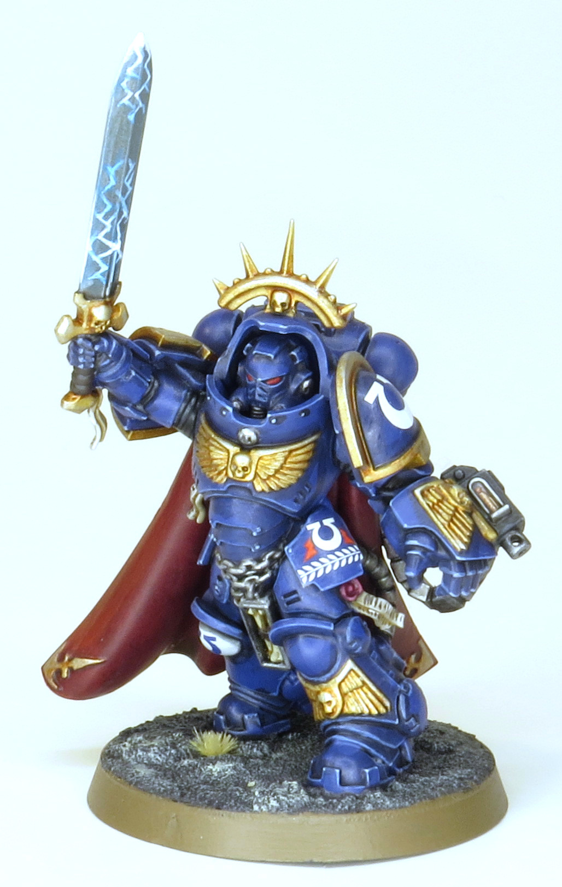
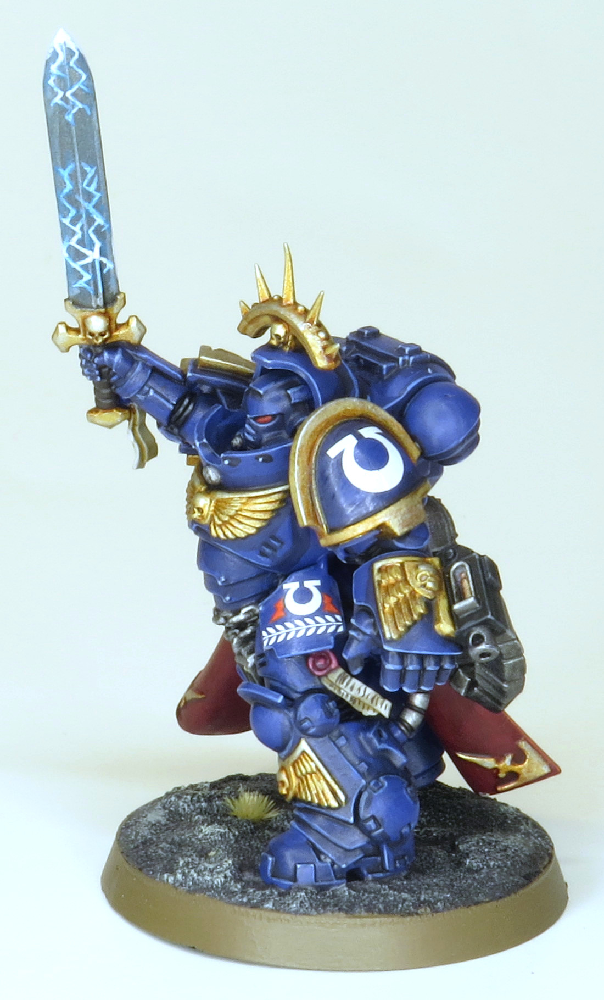
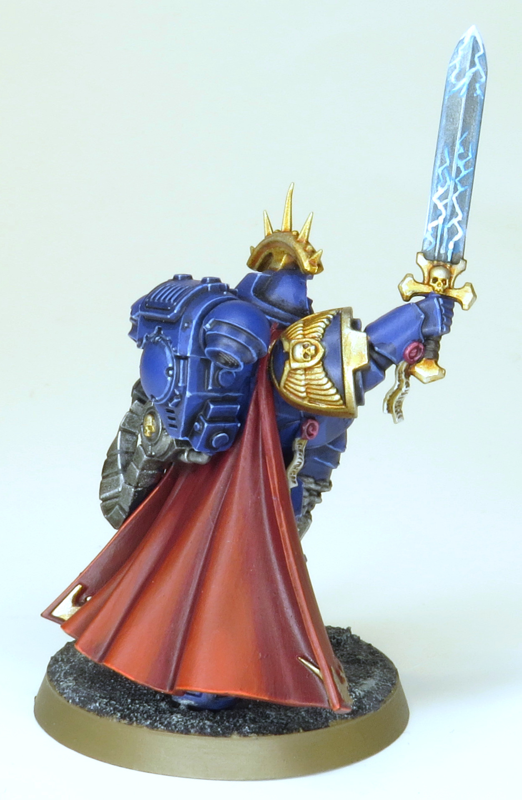
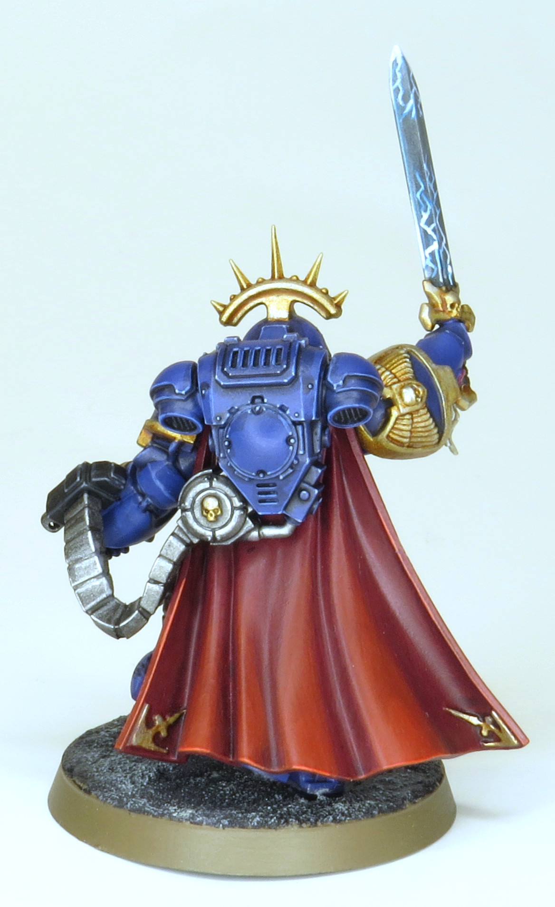
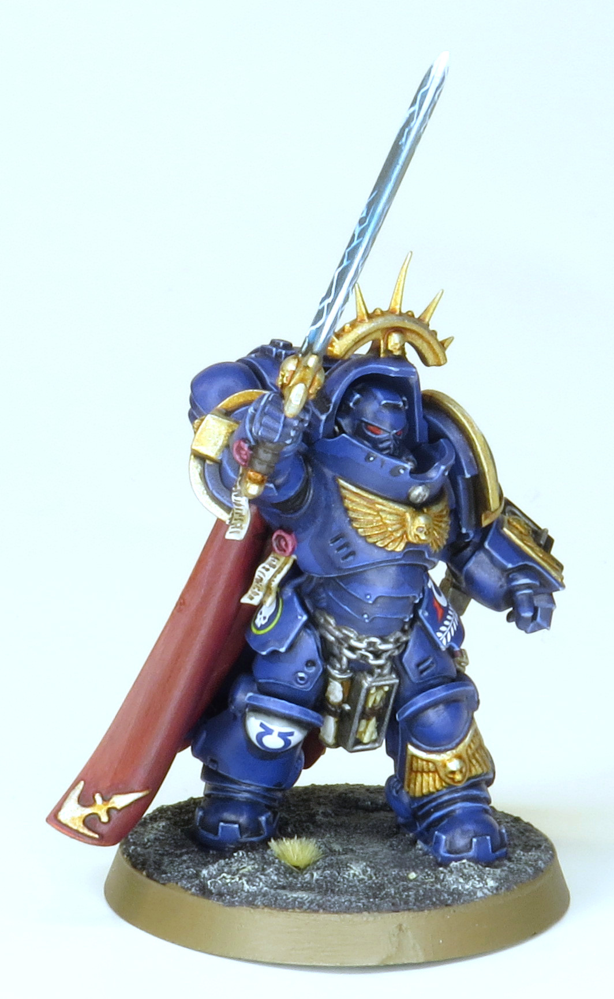

The captain from Know No Fear. Incredibly proud of the smoothness of the gradient on the cloak. It was great glazing practice and ended up great. Power swords are always fun too.





Paints Used:
Blue Armour: Macragge Blue, Nuln Oil in recesses, edge highlight Calgar Blue, Fenrisian Grey on the sharpest points
Steel: Leadbelcher, Nuln Oil all over, edge hightlight Stormhost Silver
Gold: Retributor Armour, Reikland Fleshshade all over, highlight Liberator Gold
Black: Abaddon Black, edge highlight Eshin Grey and Dawnstone
Leather: Dryad Bark, Agrax Earthshade all over, edge highlight Gorthor Brown
Cloak: Khorne Red, Carroburg Crimson all over, glaze Evil Sunz Scarlet and Wild Rider Red to create gradients and edge highlights, very thinly glaze Khorne Red to even out colour transitions
Power Sword: Glaze Ahriman Blue all over, lightning Ahriman Blue, mix Ahriman Blue and Vallejo white up to pure white to highlight
Purity Seal Wax: Screamer Pink, Carroburg Crimson all over, highlight Pink Horror
Purity Seal Paper: Rakarth Flesh, Seraphim Sepia all over, highlight Pallid Wych Flesh, Dryad Bark text
Armour Eye Lenses: Mephiston Red
Base: Vallejo White Pumica, Mechanicus Standard Grey, Nuln Oil all over, drybrush Screaming Skull, Gamers Grass TinyTufts Beige, Steel Legion Drab rim